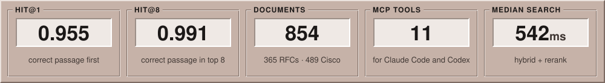
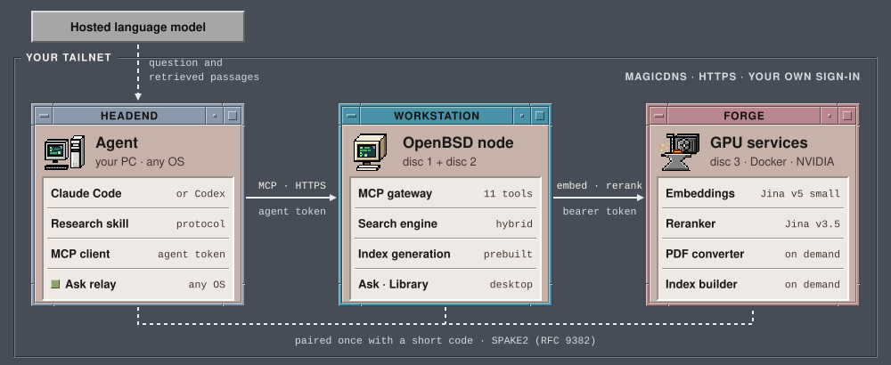
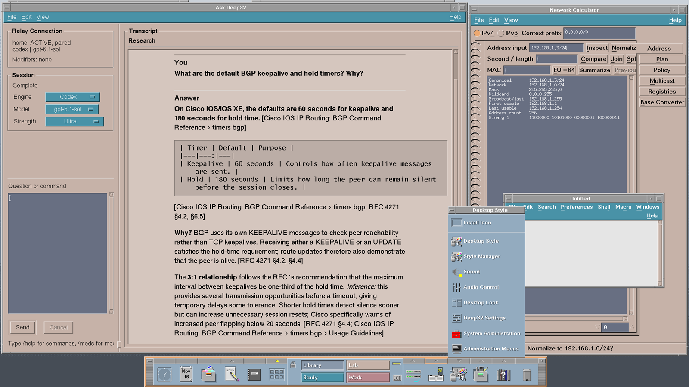
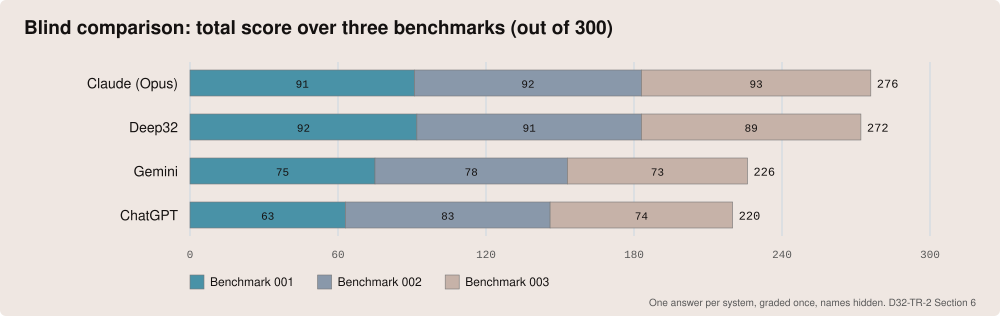
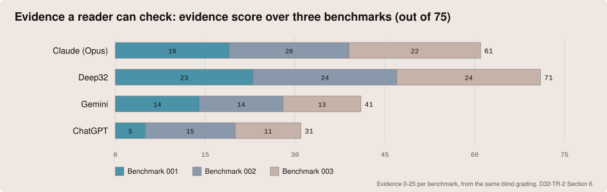

Deep32 answers network and security engineering questions from a local corpus of 365 RFCs and 489 Cisco documents. Claude Code or Codex does the research through eleven MCP tools: it searches the corpus, reads whole sections, looks up RFC status and checks each quotation against the stored text. Two more collections come with it and are searched only when you ask for them: 241 PowerShell documents and 85 about Deep32 itself.
The corpus, the index and the search engine run on your own machines. The language model is hosted, so the question, the queries the agent writes and the passages it gets back go to the model provider.
This release is an alpha. It assumes you're comfortable installing an operating system in a VM and running Docker.
Start here
General setup
One PC with an NVIDIA card runs the Forge and your agent, and the Workstation runs as a VM on it. The setup wizard checks each step. Eleven steps, each with what you need, what to do, what you should see and what to do if it doesn't.
Start the walkthroughBy hand
Advanced install
Each part by hand with deep32-get, layouts across machines and sites, disk budgets, ports,
tailnet rules, the Forge on Docker Desktop or Docker Engine, and what to do afterwards.
With an agent
Install with Claude Code or Codex
Open Claude Code or Codex in a clone of the repository and run /deep32-install or
$deep32-install. It follows AGENTS.md and asks before it changes anything; passwords, sign-in
clicks and pairing codes stay yours.
At a glance

The three parts
A deployment has three parts. They can share one machine or sit on separate ones, at home or across sites. They talk over your own Tailscale network, your tailnet, and each pair of parts is introduced once with a short code.
Workstation
An OpenBSD VM or machine that holds the corpus and the index, with the search engine, the MCP gateway, the Ask window and the Deep32 Library. It installs from disc 1 and imports its content from disc 2.
Forge
The machine with the NVIDIA card. It runs the embedding and reranking models in Docker, behind one authenticated door. Without a Forge, search works on keywords only.
Agent PC
The PC where Claude Code or Codex runs. Connect pairs it with the Workstation and installs the research skill. The rest of the documentation calls it the headend.

The Workstation
Your agent can use Deep32 over MCP while it works, or you can type a question in the Workstation's Ask window and have the agent on your PC answer it there.

Measured answers
I gave Deep32 and three general assistants the same three hard routing problems, on OSPF external routes, BGP route reflection and an MPLS VPN escalation, and had every answer graded blind against a key worked out first from the RFCs and Cisco documents. Deep32 answered from its own corpus with web search off; the others searched the web.


Read more
Support
Questions go to Discussions and bugs to Issues. If you like Deep32 and want to support it, everything donated goes to costs for this project.